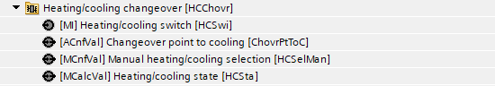
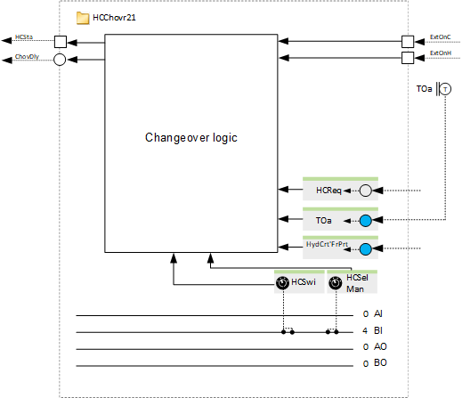
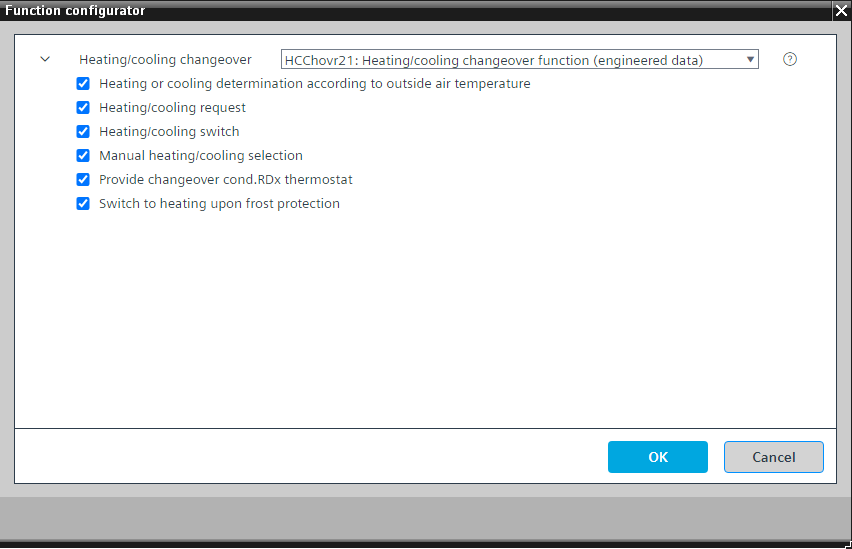

[HCChovr21] 加热/cooling 切换功能
Program block, name / node subtype: [HCChovr21] Heating/cooling changeover function
Library hierarchy: Universal equipment
Family: HCChovr
项目树 | 图表 |
|---|---|
|
 |  |
Configurator


程序块存储在没有 I/Os. 的库中 使用auto-create and auto-connect函数创建 I/Os 和 /or 将它们连接到接口块，例如 R_A、CMD_B。或者，从包含库中预定义 I/Os 的文件夹中取出 I/Os，并从工厂中取出 /or，并将它们连接到接口块。
根据不同的条件和来源确定加热或冷却状态。
计算出的加热或冷却状态以多状态计算值显示，并且可以从其他功能读取，例如从空气处理机组中的加热/cooling盘管读取。
HCChovr 用于加热/cooling 电路设备（在程序块HCcrPltMod21 的HCcr21x 中）。
该程序块具有以下可选功能：
Option: Heating or cooling determination according to outside air temperature
读取外部空气温度，对其进行过滤，将其与通过配置值对象“制冷切换点”设置的温度进行比较，并确定制热或制冷状态。这与来自控制程序其他部分的加热或冷却请求相协调。
Option: Heating/cooling request
为 BACnet 引用准备的接口，该引用提供加热 /cooling 请求，可能位于不同的自动化站中。
Option: Heating/cooling switch (1xMI=2xBI)
读取开关信号以手动选择加热或冷却状态。
Option: Manual heating/cooling selection
用于手动选择加热或冷却状态的多状态配置值。
Option: Provide changeover condition to RDx thermostat
用于写入两个 BACnet 对象的接口，用于加热和冷却区域切换条件的逻辑。
Option: Switch to heating upon frost protection
连接液压回路防冻保护信号的接口。如果 HCChovr21 用于加热 /cooling 电路设备，这是一个重要的选项。
姓名 | 描述 | 类型 | 报警/通知类 | 趋势/类型 | |
|---|---|---|---|---|---|
HCSta | Heating/cooling state | MCalcVal: Multistate calculated value | No | 是的，4 | |
姓名 | 描述 | 类型 | 报警/通知类 | 趋势/类型 | |
|---|---|---|---|---|---|
HCSwi | Heating/cooling switch | MI：多态输入 | No | 是的，4 | |
HCSelMan | Manual heating/cooling selection | MCnfVal: Multistate configuration value | N/A | 是的，4 | |
描述 |
|---|
Switch to heating upon frost protection |
Heating/cooling request |
Heating or cooling determination according to outside air temperature |